AIVA 
Artificial
Intelligence
Virtual Artist
AIVA es una inteligencia artificial especializada en la composición musical,
desarrollada por AIVA Technologies. Desde su lanzamiento ha ganado
notoriedad por su capacidad para componer música de manera autónoma,
especialmente en géneros como la música clásica, la música de cine
y las bandas sonoras para videojuegos.
desarrollada por AIVA Technologies. Desde su lanzamiento ha ganado
notoriedad por su capacidad para componer música de manera autónoma,
especialmente en géneros como la música clásica, la música de cine
y las bandas sonoras para videojuegos.
¿Cómo funciona?
AIVA utiliza redes neuronales
profundas (Deep Learning) para su
funcionamiento.
Diseñadas para emular
el comportamiento del cerebro humano,
esencial para:
 identificación de estilos
identificación de estilos
reproducción de piezas complejas


Emplea redes neuronales
profundas para analizar
grandes volúmenes de datos
musicales.
profundas para analizar
grandes volúmenes de datos
musicales.
Descompone las
composiciones en
sus componentes básicos:

Melodías
Armonías

Ritmos
para reconocer
patrones comunes
Una vez que AIVA ha aprendido estos patrones, los aplica en crear nuevas composiciones.
La creación se basa
en el entrenamiento
en una gran base de datos
de partituras y música digital
 +
+
 +
+
 +
+